GALERIA
Releitura da Pintura "Iracema"
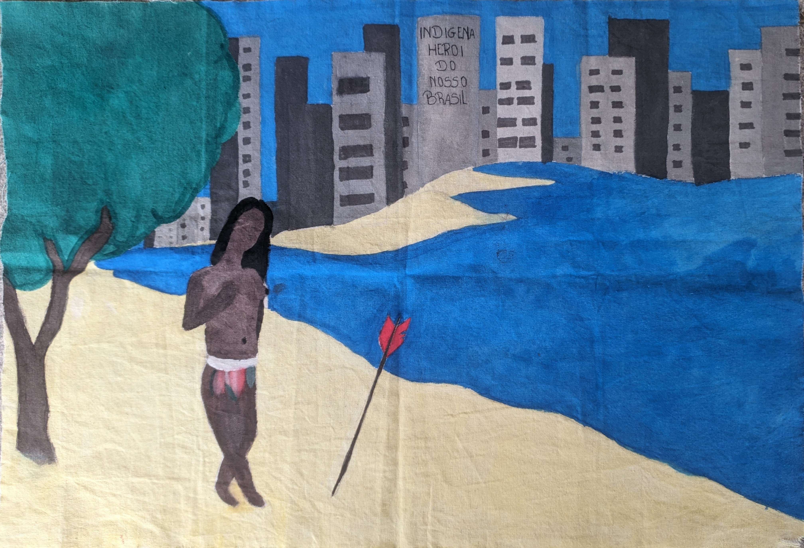
Iracema: a Herança Perdida
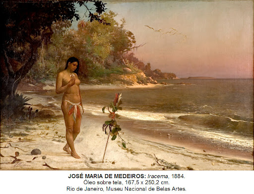
Iracema
Releitura da Pintura "A Primeira Missa"
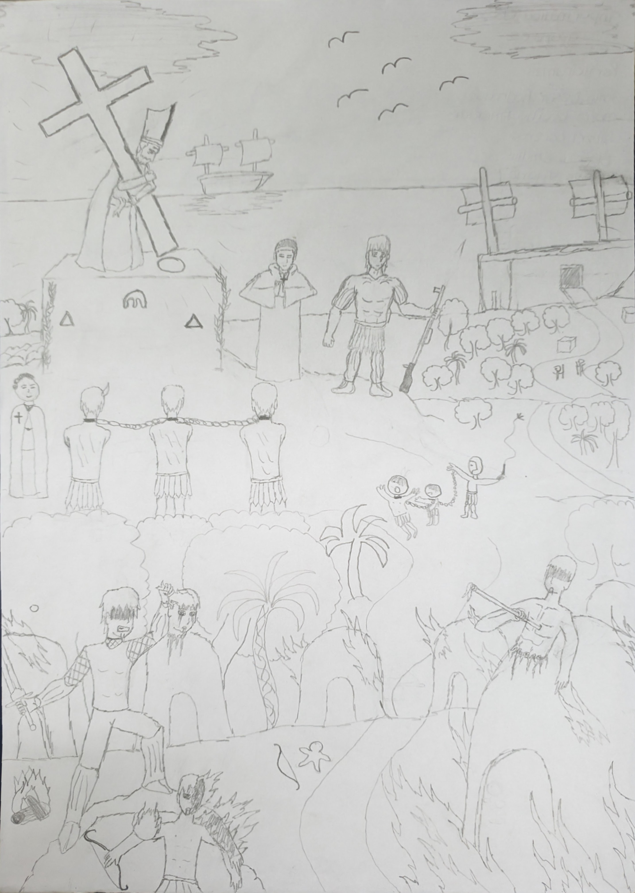
A Chegada da Cruz Colonizadora
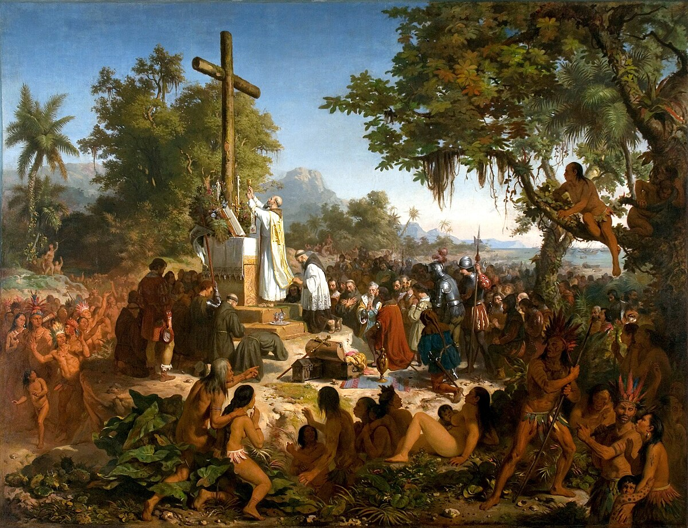
Primeira Missa no Brasil - Victor Meirelles
×
Outras Pinturas com Temática Indígena Produzidas no Século XIX
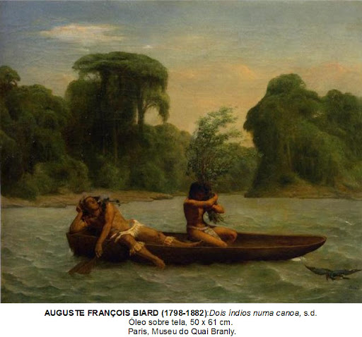
Dois Índios numa Canoa
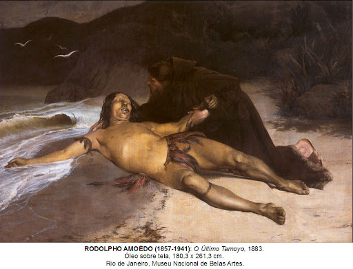
O Último Tamoyo
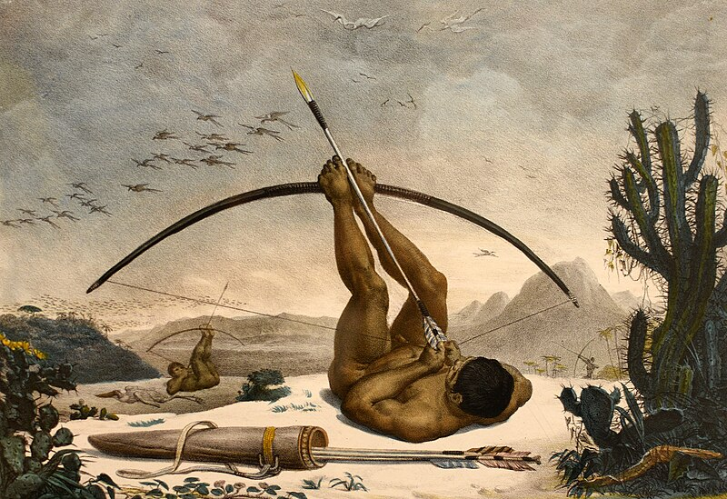
Caboclo - Jean-Baptiste Debret (1768-1848)
Obras Indígenas
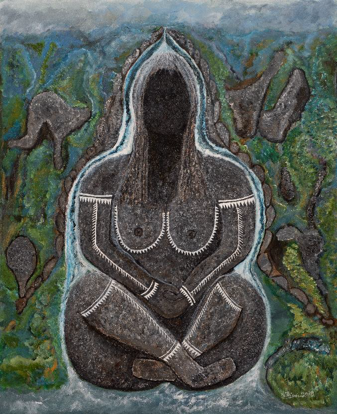
Mulher Guariba - Duhigó
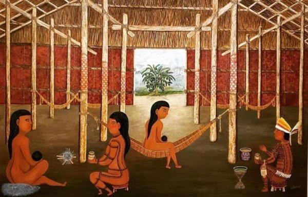
Nepũ Arquepũ - Duhigó
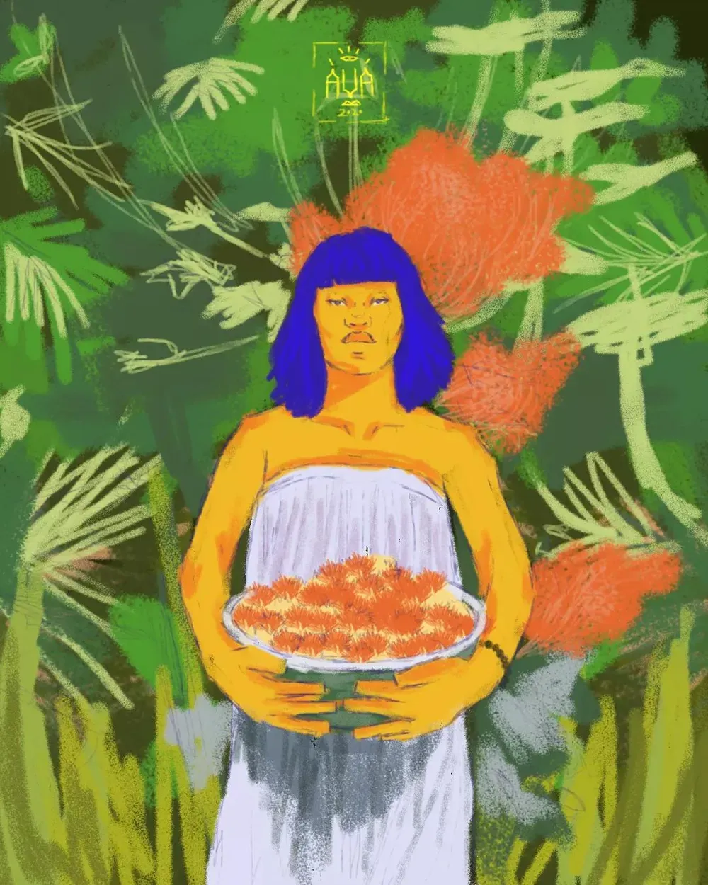
Autorretrato - Auá Mendes
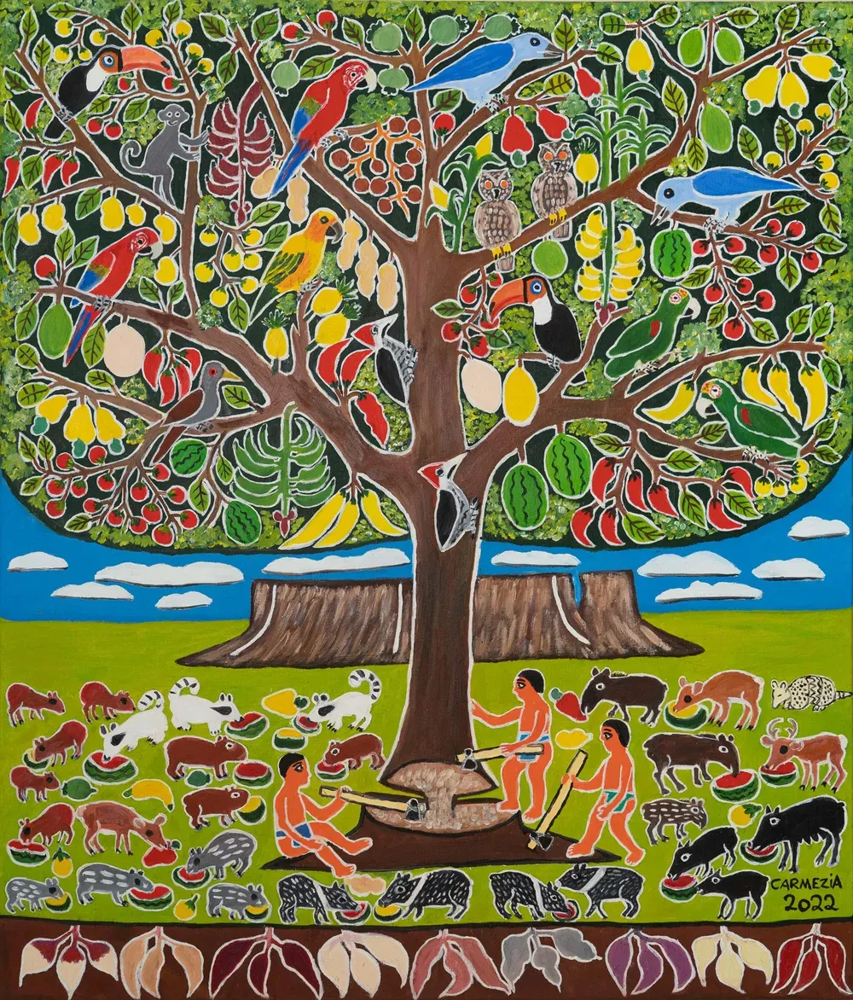
A árvore da vida - Carmézia Emiliano